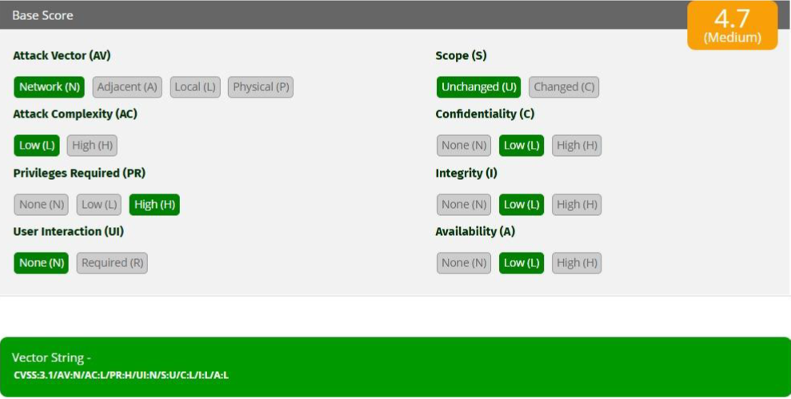

Actividad 17: Cuantificación de Riesgo Operativo Mediante CVSS v3.1
Documento formal de la práctica (PDF):
Descargar Artículo1. Introducción Contextual
En el ecosistema defensivo de una organización, la detección técnica de fallas lógicas es insuficiente si no se asocia a un marco de priorización estandarizado. El modelo CVSS v3.1 (Common Vulnerability Scoring System) permite normalizar métricas matemáticas de explotabilidad y de impacto, abstrayendo factores de riesgo en puntuaciones reproducibles para priorizar esfuerzos de parchado y remediación de forma eficiente.
2. Desarrollo Técnico
Se analizó un escenario técnico basado en una brecha descubierta en una plataforma web interna de la organización. La vulnerabilidad permite la ejecución remota de código por red, pero se encuentra restringida por requerimientos de autorización internos rígidos y el daño se encapsula de manera local. Se construyó la siguiente cadena del vector métrico:
Vector String Oficial Calculado: CVSS:3.1/AV:N/AC:L/PR:H/UI:N/S:U/C:L/I:L/A:L Métricas de Explotabilidad: • Attack Vector (AV): Network (N) • Attack Complexity (AC): Low (L) • Privileges Required (PR): High (H) • User Interaction (UI): None (N) Métricas de Impacto: • Scope (S): Unchanged (U) • Confidentiality (C): Low (L) • Integrity (I): Low (L) • Availability (A): Low (L)
La evaluación final arrojó un **Base Score de 4.7**, clasificando la severidad en un rango **Medio**. Aunque la facilidad técnica intrínseca es alta (Complejidad Baja) y no requiere interacción de usuarios ajenos, el requerimiento imperativo de contar con privilegios administrativos previos (PR:H) frena la severidad del fallo.
3. Material Multimedia
A continuación se integra el gráfico analítico obtenido de la calculadora oficial de la FIRST para la generación del puntaje matemático del caso de estudio:

Figura 17.1: Desglose de subcalificaciones para Explotabilidad e Impacto (Puntaje: 4.7 Medio).
4. Opinión y Reflexión Técnico-Académica
El análisis de métricas como CVSS v3.1 previene que los administradores de sistemas gasten recursos valiosos conteniendo alarmas técnicas sobrevaloradas. Este caso en particular demuestra que una vulnerabilidad expuesta en la red pública de internet (AV:N) puede controlarse eficientemente si las políticas de acceso del sistema siguen el principio de menor privilegio (PR:H). La mitigación estratégica debe centrarse siempre en el control robusto de las identidades corporativas.
5. Referencias Técnicas
- FIRST (2026). Common Vulnerability Scoring System v3.1 Specification Document.
- NIST National Vulnerability Database (NVD) - Metric Guide Lines.
- RFC 7384 - Security Requirements for Time Protocols Vulnerability Frameworks.